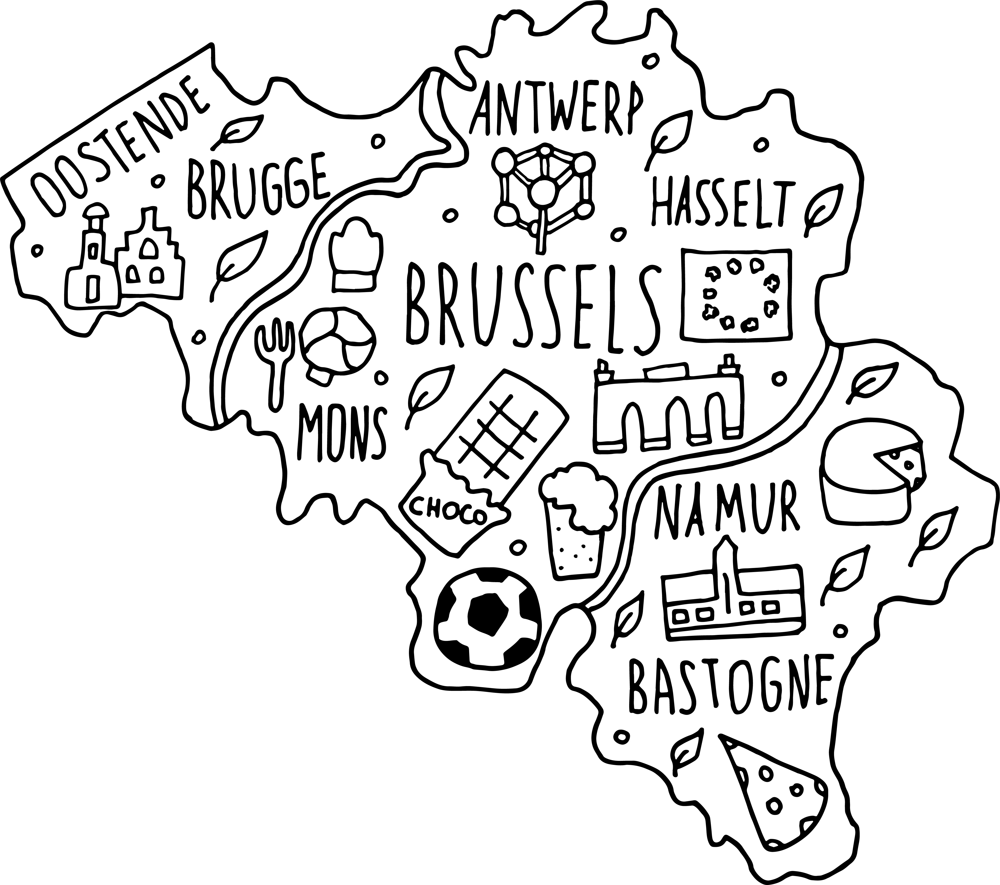

<section class="container" style="padding-top: 100px;">
  <div class="row">
    <div class="col-12 col-sm-12 col-md-6 col-xl-6 text-center">
      
    </div>

    <div class="col-12 col-sm-12 col-md-6 col-xl-6 d-flex flex-column justify-content-around">
      <h1>Find all the resources to navigate the belgian social system</h1>
      <p>Here you can find lists of portals and websites from the Belgian social system organized in topics</p>
      <button mat-flat-button [routerLink]="['sectors']">Check the categories</button>
    </div>
  </div>
</section>
<router-outlet></router-outlet>
